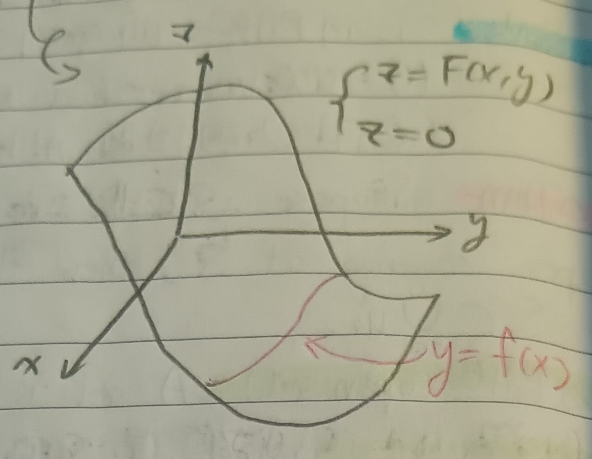
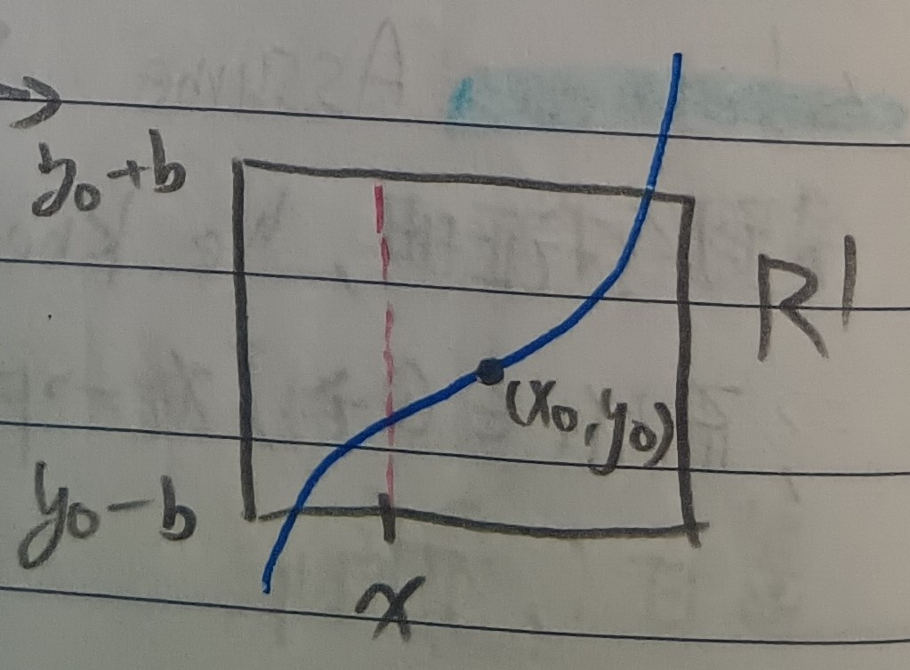

這份筆記是關於隱函數定理與其證明。
隱函數
定義 1：隱函數 (Implicit Function)
一般來說，隱函數指的是把\(y=f(x)\)寫成\(z=F(x,y)=y-f(x)\)與\(z=0\)的交集的過程，見下圖1(通常來說，是把\(F(x,y)=0\)的部分想辦法表示成\(y=f(x)\))。
註記 1-1
很明顯的，我們至少要有一點\((x_0,y_0)\) s.t. \(F(x_0,y_0)=0\)。我們考慮\(z=F(x,y)\)在\((x_0,y_0)\)附近的切平面，我們會有以下兩種狀況：
1. 該切平面是水平的。
2. 該切平面不是水平的。
一般來說，我們只考慮狀況2。
例 1-1-1
函數\(z=x^2+y^2\)在\((0,0,0)\)的切面就是水平的，然而它和\(xy\)平面的交集只有原點而已，根本沒有函數可言。
於是，我們只考慮狀況2，即\(\langle F_x(x_0,y_0), F_y(x_0,y_0)\rangle\)不是零向量的狀況。
隱函數定理
定理 2：隱函數定理 (Implicit Function Theorem)
令\(F(x_0,y_0)=0\)且\(F\)在\((x_0,y_0)\)附近是\(C^1\)，且其在\((x_0,y_0)\)的切平面非水平(WLOG，可以令\(F_y(x_0,y_0\neq 0)\))，則：
1.
存在一個以\((x_0,y_0)\)為中心的矩形
\[
R=\{(x,y)|x_0-\alpha\leq x\leq x_0+\alpha, y_0-\beta\leq y\leq
y_0+\beta\}
\] 使得對於所有\(x_0-\alpha\leq x\leq
x_0+\alpha\)都存在唯一的\(y\)
s.t. \(F(x,y)=0\)(即在\(R\)中，\(F(x,y)=0\)可以寫成\(y=f(x)\))。
2. \(f\)連續且可微，且會有 \[
f'(x)=-\frac{F_x}{F_y}
\]
證明：WLOG，令\(F_y(x_0,y_0)=m>0\)，由於\(F_y\)連續，故存在 \[ R'=\{(x,y)|x_0-a\leq x\leq x_0+a, y_0-b\leq y\leq y_0+b\} \] 使得在\(R'\)中總有\(F_y(x,y)>\frac{m}{2}>0\)(☆)。並且在\(R'\)也存在\(M\)使得 \[ |F_x(x,y)|\leq M<\infty\mbox{ (★)} \] 若對於所有\(x_0-a\leq x\leq x_0+a\)都有\(F(x,y_0+b)>0\)和\(F(x,y_0-b)<0\)，則由中間值定理和\(F\)在\(y\)方向上單調遞增(上(☆)式)知存在唯一的\(y\)使得\(F(x,y)=0\)(見下圖2)。我們接著就要證明這件事。
首先，由微分均值定理，我們有 \[
\begin{aligned}
F(x,y_0)&=F(x,y_0)-\underbrace{F(x_0,y_0)}_{=0}\\
&=F_x(\xi,y_0)(x-x_0)\mbox{, for some }x_0\leq\xi\leq x
\end{aligned}
\] 於是，由上(★)式知\(F(x,y_0)\leq
Ma\)。
接著，由微分均值定理和(☆)式有 \[
\begin{aligned}
F(x,y_0+b)&=\textcolor{red}{F(x,y_0+b)-F(x,y_0)}+F(x,y_0)\\
&>\textcolor{red}{\frac{m}{2}b}-Ma>0
\end{aligned}
\] 同理，有\(F(x,y_0+b)\)。於是，第1.點就證完了，我們接著證第2.點。
今有\(y=f(x)\)，給定\(h\)，令\(f(x+h)=y+k\)。我們希望說明當\(h\to 0\)時，\(k\to 0\)(於是\(f\)就連續)。我們有 \[
\begin{aligned}
0&=F(x+h,y+k)-F(x,y)\;\;(F(x,y)=F(x+h,y+k)=0)\\
&=F_x(x+\theta h,y+\theta k)h+F_y(x+\theta h,y+\theta
k)k\;\;\mbox{(微分均值定理)}
\end{aligned}
\] 於是 \[
\begin{aligned}
&\frac{k}{h}=-\frac{F_x(x+\theta h,y+\theta k)}{F_y(x+\theta
h,y+\theta k)}\\
\Rightarrow&\left|\frac{k}{h}\right|\leq\frac{2M}{m}
\end{aligned}
\] 於是我們知道當\(h\to
0\)時要有\(k\to 0\)，即\(f\)連續。並且 \[
f'(x)=\lim_{h\to 0}\frac{f(x+h)-f(x)}{h}=\lim_{h\to
0}\frac{k}{h}=-\frac{F_x}{F_y}
\] QED